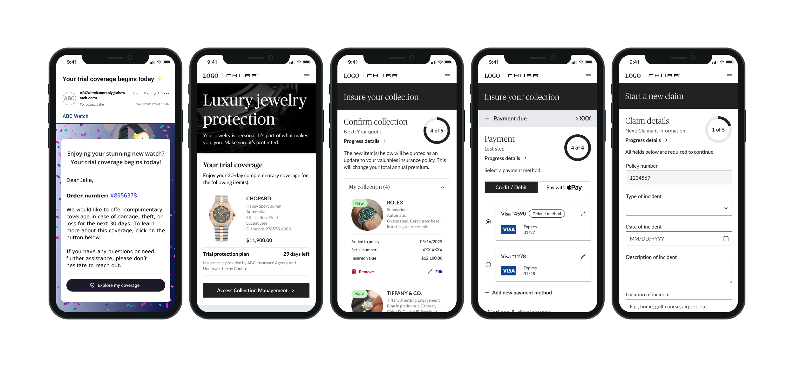
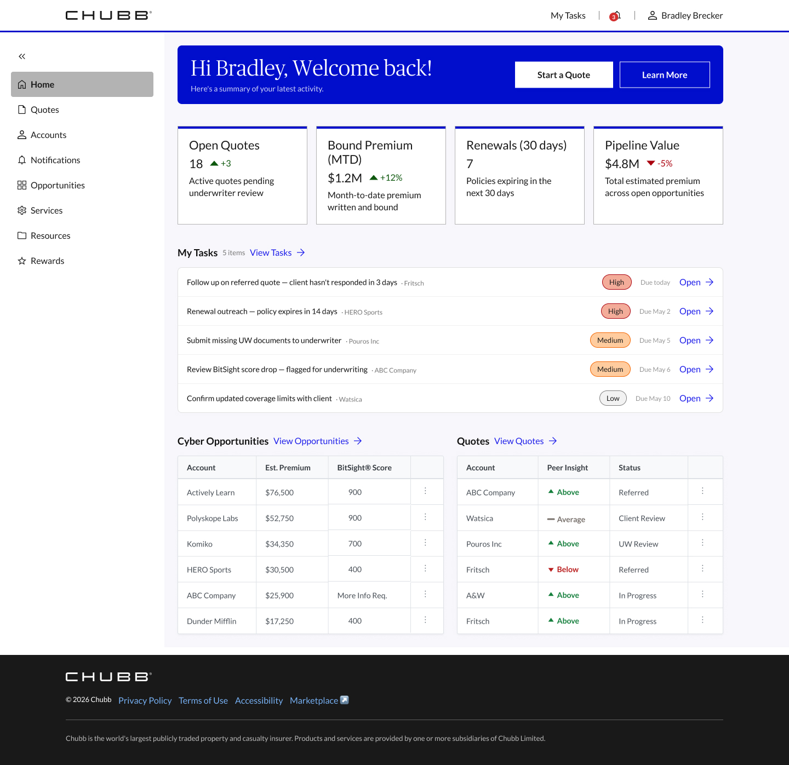

01
From Manual Mapping to Guided Configuration
Designed Chubb's API Connect ingestion onboarding experience — a unified interface with an AI-assisted expression builder that automates field matching and eliminates the manual rework triggered by every schema change.
View Case Study →03
Chubb Everyday: Agentic Prototype
Built and deployed a unified D2C insurance platform POC in 1 week using an entirely agentic workflow — Claude Code, Figma MCP, and the Chubb Design System MCP. Currently in consideration for production.
View Case Study →
04
Bringing Renters Insurance into the Digital Age
Designing Chubb's first D2C renters insurance platform — a fully digital, mobile-first experience that removed the agent from the equation and met younger customers where they are.
View Case Study →
05
Protect What You Collect
Designed Chubb's first digital self-service portal for Valuable Articles Coverage, taking it from a greenfield brief to a live product. Quote, bind, pay, and manage jewelry and watch coverage without an agent call.
View Case Study →
06
From Spoke to Suite
Cyber insurance quoting lived on its own island. I migrated the platform to Chubb's design system, a first for the company, and helped consolidate it into Marketplace.
View Case Study →